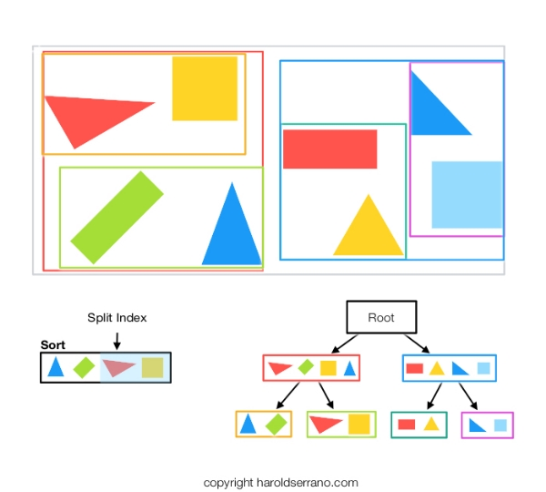
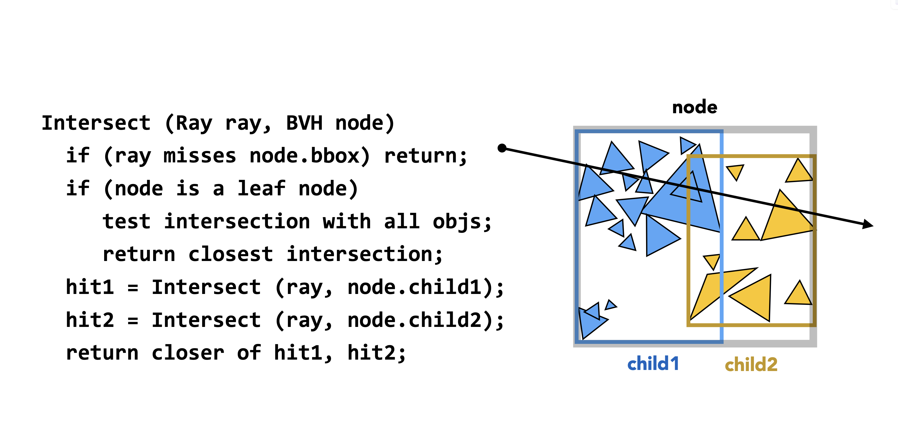
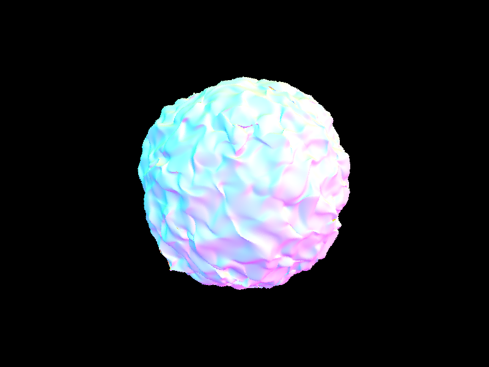

This project implements a path tracer to simulate realistic lighting and shading in 3D scenes. The path tracer supports features such as ray generation, intersection tests, bounding volume hierarchies (BVH), direct and global illumination, and adaptive sampling. The implementation is designed to balance accuracy and performance, enabling the rendering of complex model (wall-e) requiring the most intersection tests and consequently the slowest rendering speed at just 0.0009 million rays per second. scenes with realistic lighting effects.
In ray tracing, a ray will pass through a point on the image plane and then into the scene. In computer graphics, the image plane is a screen in the world space, where the camera is located behind the screen and rays past through the screen into the scene. In other words, the rays that hit a certain x and y pixel on the screen can then be converted to a ray in camera space and then to a ray in world space. In this task, our goal is to generate rays in world space that pass through each pixel of the image plane. Specifically, we can create a function that takes in an x and y pixel coordinate and returns a ray in world space that passes through that pixel.
In some practices (often how ray tracing is done in fragment shaders), we do this by multiplying the ray in screen space by a known View Matrix to convert it to camera space and then multiplying it by a known Projection Matrix to convert it to world space. In this project, we first convert normalized image coordinates to a camera space sensor and then apply a Projection Matrix to convert it to world space. The camera space sensor is defined as a rectangle in the camera space with the following properties:
, where \(hFov\) and \(vFov\) are field of view angles along \(X\) and \(Y\) axis. This is demonstrated in the figure below. Note also that screen coordinates are defined in the range of \([0, 1]\), where \((0, 0)\) is the bottom left corner of the image and \((1, 1)\) is the top right corner of the image. This is important in understanding how to convert from screen space to camera space.
To convert from screen space to camera space, we simply linearly interpolate between the bottom left and top right corners of the sensor rectangle using the normalized image coordinates. If we denote the normalized image coordinates as \((x, y)\), and denote the bottom left and top right corners of the sensor rectangle as \((x_{bl}, y_{bl})\) and \((x_{tr}, y_{tr})\), respectively, then the camera space coordinates can be computed as follows:
After we have the camera space coordinates, we can convert them to world space by multiplying them with a Projection Matrix. The projection matrix is defined in the Camera class' c2w method. Finally, given that our camera is located at the origin \(pos\) in world space, we can generate a ray in world space defined by \(pos + t \cdot [x_{cam}, y_{cam}, z_{cam}]^T\).
Important Note: We also initialize the minimum and maximum t values for the ray, which we later use to determine if the ray intersects with any objects in the scene.
The main idea is that, for every pixel, we want to get the color of the pixel by sampling the scene at that pixel. However, we want to avoid aliasing artifacts that can occur when we sample a single ray per pixel. This is because a pixel covers a certain area in the scene x, y to x + 1, y + 1, and the area of rays that pass through the pixel can be large enough to hit points of different colors. To get a better approximation of the color of the pixel, we can sample multiple rays per pixel and average their colors. The unbiased way to do this is to use Monte Carlo sampling!
Given an x, y pixel coordinate (bottom left corner of the pixel), we can sample multiple rays passing through \(x + \alpha, y + \beta\) for \(\alpha, \beta \in [0, 1]\). We then generate a ray that passes through the point, and then we sample the radiance of the ray at these points, and finally average the colors of the rays to get the color of the pixel.
Since we are working with unnormalized pixel coordinates, we need to convert them to normalized image coordinates by dividing by the image width and height, which is given by the sample buffer. We also specifically take ns_aa samples per pixel, where ns_aa is the number of samples per pixel for anti-aliasing. To sample the radiance of the ray, we create a method that takes in a ray and returns the color of the pixel at that ray's intersection with the scene. We then set the sample buffer's color (update_pixel(color, x, y)) and also mark the total number of samples we used in the sample count buffer (at index x + y * width).
Given a ray characterized by \(o + t \cdot d\), where \(o\) is the ray origin, \(d\) is the ray direction, and \(t\) is the distance from the ray origin to the intersection point, we want to determine if the ray intersects with a triangle defined by its three vertices \(p_1, p_2, p_3\). If so, we also want to compute the intersection point and the normal at that point.
To do this, we can use the Möller–Trumbore intersection algorithm, which is a fast and efficient way to compute the intersection of a ray with a triangle. Starting with the ray intersection defined by:
where \(b_0, b_1, b_2\) are the barycentric coordinates of the intersection point with respect to the triangle vertices that satisfy \(b_0 + b_1 + b_2 = 1\). By rearranging, we get the following equations:
where \(\vec S_1 = \vec D \times \vec E_2\), \(\vec S_2 = \vec S \times \vec E_1\), \(\vec E_1 = \vec P_1 - \vec P_0\), \(\vec E_2 = \vec P_2 - \vec P_0\), and \(\vec S = \vec O - \vec P_0\).
If our \(t\) value is between the minimum and maximum t values we initialized for the ray, the intersection is valid. We then store this into an Intersection object, storing our \(t\) value, the average face normal \(b_0 \cdot \vec N_1 + b_1 \cdot \vec N_2 + b_2 \cdot \vec N_3\), and set the BSDF to the triangle's BSDF (more on this later). As a result, we can ray trace a simple plane made by two triangles, or more sophisticatedly, a scene made with multiple triangles:
| Simple Plane | More Sophisticated Scene |
|---|---|
We extend the ray intersection algorithm to also support spheres. A sphere is defined by its center \(C\) and radius \(r\). A sphere equation can be defined as \[\| \vec P - C \|^2 = r^2\] where \(\vec P\) is a point on the sphere. To find the intersection of a ray with a sphere, we can substitute the ray equation \(\vec P = \vec O + t \cdot \vec D\) into the sphere equation. This gives us:
If the determinant \(B^2 - 4AC\) is positive, we have two intersection points. If it is zero, we have one intersection point (the ray is tangent to the sphere). If it is negative, there is no intersection. We can then check if the t value is between the minimum and maximum t values we initialized for the ray. If so, we store the intersection point and normal in an Intersection object, similar to how we did for triangles. Note that a ray can intersect up to two points on a sphere, but we choose the closest intersection point (the one with the smallest t value) to store in the Intersection object. Note also that the normal of a sphere is defined as just the normalized vector from the center of the sphere to the intersection point. We can then render a simple scene with spheres and triangles:
We can render more simple scenes:
Ray tracing as done thus far is slow and outdated. Modern ray tracing algorithms use a Bounding Volume Hierarchy (BVH) to speed up the ray tracing process. A BVH is a tree structure where each node represents a bounding volume that contains a set of objects in the scene. The leaf nodes of the BVH contain the actual objects, while the internal nodes contain bounding volumes that enclose their child nodes. The BVH allows us to traverse the scene and quickly discard collections of primitives that a particular ray is guaranteed not to intersect. An illustration of a BVH in 2D is shown below along with a 3D example:
| 2D BVH | 3D BVH |
|---|---|
|  |
To construct the BVH, we are first given a list of primitives. We then create the minimum bounding box which includes all the primtives and create a BVH with that bounding box. If that box contains less thansome threshold number of primitives (the maximum number of primitives per leaf node), we create a leaf node containing all the primitives. Otherwise, we split the primitives into two groups, sorted in some manner, and then recursively create child nodes for each group. The interesting part is how to split the primitives. There are several heuristics, with one of the most simple ways being a split on the median's centroid. In this project we perform a different heuristic which can perform better than the median split in terms of performance, which is a split using Surface Area Heuristic (SAH).
To do this, we have a function which, given a list of primitives sorted by an axis, returns the best split point along that axis and minimum cost of splitting the primitives at that point. First, we determine that the scene will be divided into buckets containing at most 16 primitives (16 is a good number to balance performance and memory usage). We then perform a kind of breadth-first search of primitives by each bucket, storing the bounding boxes associated with a bucket and also the number of primitives in that bucket. We then compute the cost of splitting the primitives at each bucket, which is defined as \[TransitionCost + SurfaceArea(L) * PrimitiveCount(L) + SurfaceArea(R) * PrimitiveCount(R)\], where \(TransitionCost\) is a constant cost of splitting the primitives, \(SurfaceArea(L)\) and \(SurfaceArea(R)\) are the surface areas of the left and right child nodes, and \(PrimitiveCount(L)\) and \(PrimitiveCount(R)\) are the number of primitives in the left and right child nodes. The split point with the minimum cost is then chosen as the best split point. A diagram of these buckets in a 2D example is shown below.
In practice, we have a running left and right bounding box, where we consider a split starting from the first bucket to the last bucket. At each iteration, we expand the left bounding box to expand the current bucket by including all the partitions from the first bucket to the current bucket, and we expand the right bounding box to include all the partitions from the bucket after the current bucket to the last bucket. We then compute the cost of splitting at the current bucket based on the bounding box's surface area and the number of primitives in each bounding box. We then keep a running minimum of the cost and the split point.
We then use this function of finding the best split point out of every axis. We will then sort the primitives by the best axis at their centroid and store the primitive we split on. After having sorted the primitives, we can mark the start and end of the current node, and then recursively call the BVH construction function on the left and right child nodes, passing in the start and end indices of the primitives for each child node.
To check if a ray intersects with a bounding box, we can use the slab method. The idea is to check if the ray intersects with each of the six slabs that make up the bounding box. A slab is defined by two planes, one on each side of the bounding box. For each axis (X, Y, Z), we can compute the intersection of the ray with the two planes that define the slab along that axis. We can then compute the t values for each plane and check if the ray intersects with the slab by checking if the t values are within the bounds of the slab.
So the first step is to compute the intersection t values of a ray with the two planes that define the slab along each axis. For a ray defined by \(o + t \cdot d\) and any plane defined by a point \(p\) and a normal vector \(n\), the intersection t value can be computed as \(t = \frac{(p - o) \cdot n}{d \cdot n}\). However, when the plane is axis-aligned by axis \(A\), we can simplify this to \(t = \frac{(p_A - o_A)}{d_A}\). Using these equations, slab defined by a bounding box with minimum and maximum coordinates \((min_x, min_y, min_z)\) and \((max_x, max_y, max_z)\), we can compute the t values as follows at any axis \(A\) (where \(A \in \{x, y, z\}\)):
Let's understand what these mean. The t_{min_x} value is where the ray enters the slab along the X axis, and t_{max_x} is where it exits the slab along the X axis. Similarly, t_{min_y} and t_{max_y} are for the Y axis, and t_{min_z} and t_{max_z} are for the Z axis. We are then interested in two values: the minimum \(t_{min}\) value at which the ray enters the slab and the maximum \(t_max\) value at which the ray exits the slab, at any axis. \(t_{min}\) is the maximum of all the t_{min} values since the ray must enter all slabs to be inside the bounding box, and \(t_{max}\) is the minimum of all the t_{max} values since the ray must exit all slabs to be outside the bounding box. That is:
Note that so far, we have checked for where the ray intersects at the axes of infinitely long slabs. However, our bounding box is finite, so we need to check if the ray actually intersects the bounding box by checking if \(t_{min} \leq t_{max}\). Additionally, we also need to check if \(t_{min}\) is greater than the minimum t value we initialized for the ray and if \(t_{max}\) is less than the maximum t value we initialized for the ray. Recall that we initialized these values in the generate_ray method (see section 1.1). If all these conditions are satisfied, then the ray intersects the bounding box, and we can return true. Otherwise, we return false. This method is illustrated in the figure below.
| Slabs of an Axis Aligned Bounding Box | Ray Intersection with Slabs (in 2D) |
|---|---|
To check if a ray intersects with the BVH, we can use a recursive function that traverses the BVH tree which is inspired from the following algorithm:
To check that our ray misses the BVH node, we simply test the intersection with the bounding box of the BVH node using the slab method described above. If it hits the bounding box, we then check if the node is a leaf node. If it is, we also track the nearest intersection. Otherwise, we recursively check the left and right child nodes of the BVH.
As a result, we are able to create incredibly large and complex scenes extremely quickly.
|  | |||
| Blob | Statue | Wall-E | Beast |
After implementing the BVH, we can see that the performance of ray tracing is significantly improved. Times are recorded from a Macbook Pro 2020 with an M1 chip using 8 threads. Here are the differences in performance between the naive ray tracing and the BVH ray tracing for a few scenes:
| Scene | BVH Build Time | Primitives | Naive Ray Tracing Time |
|---|---|---|---|
| Wall-E | 11.8438s | 240326 | 225.9725s |
| Blob | 21.7087s | 196608 | 167.4297s |
| Statue | 1.8765s | 133796 | 94.0372s |
This is mainly because there was a significant reduction in the number of ray-triangle intersection tests. For example, when rendering wall-e.dae, the system traced 207,904 rays and performed an average of 75,254.59 intersection tests per ray. The blob.dae model required 225,379 rays with 56,847.77 intersection tests per ray, while CBlucy.dae used 263,899 rays with 32,724.86 intersection tests per ray. The correlation between model complexity and rendering time is clear, with the most complex model (wall-e) requiring the most intersection tests and consequently the slowest rendering speed at just 0.0009 million rays per second.
We will now render images with realistic shading by simulating light transport in the scene.
BSDF stands for Bidirectional Scattering Distribution Function, which is a generalization of the BRDF to represent materials that can both reflect and transmit light. BSDF objects represent the ratio of incoming light scattered from incident direction to outgoing direction. There are different subclasses for different types of materials.
In this project, we implement a simple diffuse BSDF, which is defined as a constant value for all incoming and outgoing directions. In other words, the diffuse BSDF isotropically scatters light in all directions, and all incoming light is equally reflected in all outgoing directions. This is unsurprisingly simple to implement, as it is completely independent of the incoming direction. It is simply the reflectance of the material divided by \(\pi\). We divide by \(\pi\) because the solid angle of a hemisphere is \(2\pi\), and we want to normalize the reflectance over the hemisphere. Technically, even though we are not using that incoming direction in bsdf calcualtions, we are sampling an incoming direction uniformly over the hemisphere, and then using that incoming direction to compute the bsdf value. The BSDF determines how much light is reflected in the outgoing direction, which is then multiplied by the incoming light to get the outgoing radiance.
Zero-bounce illumination refers to light that reaches the camera without bouncing off anything in the scene. In other words, it is only the light that comes from the light source itself. To implement this, we simply return every traced ray hit with the emission color of that hit point. That is, given a ray and intersection object, we simply have to provide the emission color of the intersection's bsdf.
So far, we only get lighting from lights in the scene, but we want to simulate the effect of light bouncing off surfaces in the scene. For direct lighting, we model specifically 1-bounce illumination, which is light that bounces off a surface and then reaches the camera. To do this, we trace inverse rays. We first cast a ray from the camera, through a specific pixel, and into the scene. Once it intersects something in the scene, we need to determine the color of our corresponding pixel. We do this by calculating how much light is reflected back towards the camera at this intersection point. An example of a ray tracing a scene to a hit point which is then sampled to get the direct lighting is shown below.
This means that for every ray intersection point, we slightly change the perspective of our scene. The traced ray from the camera to the intersection point is now an outgoing ray of direction \(\omega_o\) from the intersection point to the camera. The radiance of this ray is determined by the formula:
where \(L_{out}\) is the outgoing radiance, \(f_r\) is the BSDF of the intersection point, \(L_{in}\) is the incoming radiance from the light source, \(\omega_i\) is the incoming direction from the light source, and \(\theta_i\) is the angle between the normal at the intersection point and the incoming direction (for foreshortening). With Monte Carlo Integration, we can approximate this integral by sampling a finite number of incoming directions \(\omega_i\). Since we are sampling over the hemisphere uniformly, the probability of any \(\omega_i\) is \(\frac{1}{2\pi}\). Therefore, we can rewrite the integral as a sum over \(N\) samples of incoming directions \(\omega_i\):
Practically, we have a function given the intersection point and the ray. This ray's direction inversed is simply our \(\omega_o\). We then loop over a number of samples which we define as the number of lights in the scene multiplied by the number of samples per light (we fix this value). We then sample a random direction \(\omega_i\) using a uniform hemisphere sampler, and then the bsdf of the intersection point given the incoming direction \(\omega_i\) and outgoing direction \(\omega_o\). We then create a ray from the intersection point in the direction of \(\omega_i\) and check for any intersection. If there is an intersection, the Intersection object provides us with the emission color at that point (as a feature of the bsdf at the point) giving us the incoming radiance \(L_{in}(\omega_i)\). We then compute \(cos(\theta_i)\) between the normal at the intersection point and the incoming direction \(\omega_i\) using the dot product. Note that the bsdf we use \(f_r\) is the bsdf of the first intersection point, while the emission color and the normal are from the second intersection point. This gives us everything we need to compute the outgoing radiance \(L_{out}\) at the first intersection point following the formula.
In the implementation, we also need to be careful about the coordinate spaces. We are working in world space, but the normals and the bsdf are in object space. First, we start with the matrix that transforms from object space to world space (make_coord_space takes the normal as input and constructs a coordinate system where z axis is aligned with the normal vector and x and y axes are tangent to the surface). This is characterized by a pure rotation matrix. Consequently the world to object space transformation is simply the transpose of the aforementioned matrix.
Starting from the camera ray, we first transform the ray direction to object space, and then compute the bsdf using the transformed ray direction and the normal in object space. More specifically, the bsdf's function takes in the incoming direction \(\omega_i\) and the outgoing direction \(\omega_o\), both in object space. Secondly, when we generate the ray in the direction of \(\omega_i\), we want the ray to be in world space. This means we need to multiply \(\omega_i\) by the world to object space transformation matrix to get the ray direction in world space.
Our results from uniform hemisphere sampling are quite noisy! While they will converge to the correct result, we can do better. We also want to be able to render images that only have point lights. To do this, we can use importance sampling. The idea is to sample incoming directions \(\omega_i\) based on the distribution of the light sources in the scene.
The method of computing the light is similar as with the previous section, but there are many differences including 0) handling point lights 1) how you sample 2) the sampling probability and therefore the Monte Carlo estimate and 3) we are generating rays to see whether they are blocked from the light. Instead of sampling some number per ray, we sample some number per light per each ray. If the light source was a point source, we only sample once (as there is only one possible incoming ray from the light).
For every light sample, we need to sample an \(\omega_i\) that comes from that light. To do this, we sample a uniform sphere around the light source. We then generate the inverse of the incoming ray, which starts from the initial ray's hit point to the light via \(\omega_i\). It is useful to think of this as a "shadow" ray. If this ray intersects the scene, then the hit point is in a shadow with respect to the current light, and it will not contribute to any light. Otherwise, we will calculate the Monte Carlo estimate.
This time, however, instead of the probability \(p(\omega_i)\) being the probability of sampling from a hemisphere, it will instead be the probability of sampling from a uniform sphere (around the light), which will be equal to \(\frac{1}{4\pi}\). The structure of the implementation is roughly the same.
| 1 Ray | 4 Rays |
| 16 Rays | 64 Rays |
It is quite clear that, the more light rays, the higher the quality of the soft shadows. Notice how the shadow of the bunny on the floor is noisy on low levels of light rays but nice and soft on high levels. This is because ...
| Uniform Sampling vs Importance Sampling | |
|---|---|
| Uniform Sampling | Importance Sampling |
Uniform sampling is much noisier than light importance sampling. This is because uniform sampling does not take into account the distribution of light sources in the scene. Light importance sampling, on the other hand, samples incoming directions based on the distribution of light sources, which results in less noise and more accurate results. In point light scenes with hemisphere sampling, we get black images because the rays are not reaching the light source. This is because the rays are being scattered in all directions, and the probability of hitting the light source is very low. Light importance sampling solves this problem by sampling incoming directions from the light source, which ensures that the rays reach the light source and contribute to the lighting of the scene.
m and max-ray-depth are used interchangeably in this section
Instead of only getting the radiance of one bouce, we want to add up to N bounces of light. To do this, we call a recursive function that calculates the radiance of at least one bounce of light from any given ray and intersection point. This function is called at_least_one_bounce. At the top view, we add the radiance from zero bounces with the radiance from at least one bounce of the initial ray, which is the ray from the camera to the intersection point in the scene. In the recursive function, we sample a random direction based on the BSDF of the intersection point and generate the next ray which is the next bounce. We then recursively call the function with the next ray and intersection point. We then add the radiance from the next bounce to the radiance from the current bounce.
We have to make sure to reduce the depth of the ray and make our base case when the depth is one, in which we return radiance after one bounce. The method is similar to the direct lighting method, so previous considerations apply. Now we are no longer importance sampling based on lights, since we are bouncing the rays to all objects in the scene and then tracing the radiance of those rays until we reach the maximum depth or the ray hits the light source. Finally, we add Russian Roulette. This entails simply an additional check on terminating the ray with some probability and then to weight it based on the inverse of the probability if we do not terminate--that is, dividing \(L_out\) by the probability every recursive step if we do not terminate.
The below results are rendered with 1024 samples per pixel unless indicated otherwise. This is done with the -s flag.
./pathtracer -t 8 -s 1024 -l 16 -m 5 -r 480 360 -f part4/global/spheres.png ../dae/sky/CBspheres_lambertian.dae
./pathtracer -t 8 -s 1024 -l 16 -m 5 -r 480 360 -f part4/global/blob.png ../dae/sky/blob.dae
./pathtracer -t 8 -s 1024 -l 16 -m 5 -r 480 360 -f part4/global/bench.png ../dae/sky/bench.dae
./pathtracer -t 8 -s 1024 -l 16 -m 5 -r 480 360 -f part4/global/bunny.png ../dae/sky/CBbunny.daeThis was rendered with a maximum of 5 bounces of light.
| Spheres | Blob | Bench | Bunny |
|---|---|---|---|
We change the at_least_one_bounce function to do direct lighting and then indirect lighting and run the following command both times:
./pathtracer -t 8 -s 1024 -l 16 -r 480 360 -f part4/directvsglobal/bunny_direct_only.png ../dae/sky/CBbunny.dae
./pathtracer -t 8 -s 1024 -l 16 -r 480 360 -f part4/directvsglobal/bunny_indirect_only.png ../dae/sky/CBbunny.dae| Direct Illumination | Indirect Illumination |
|---|---|
We can see that the indirect illumination, which contains bounces of only M > 1, is extremely faint. This is because the light is bouncing around the scene and losing energy at each bounce. The direct illumination, on the other hand, is much brighter and more pronounced. But together, they create a more realistic and detailed image.
Mth bounce of light./pathtracer -t 8 -s 1024 -l 16 -m 0 -o 0 -r 480 360 -f part4/new/bunny_o0_m0.png ../dae/sky/CBbunny.dae && ./pathtracer -t 8 -s 1024 -l 16 -m 1 -o 0 -r 480 360 -f part4/new/bunny_o0_m1.png ../dae/sky/CBbunny.dae && ./pathtracer -t 8 -s 1024 -l 16 -m 2 -o 0 -r 480 360 -f part4/new/bunny_o0_m2.png ../dae/sky/CBbunny.dae && ./pathtracer -t 8 -s 1024 -l 16 -m 3 -o 0 -r 480 360 -f part4/new/bunny_o0_m3.png ../dae/sky/CBbunny.dae && ./pathtracer -t 8 -s 1024 -l 16 -m 4 -o 0 -r 480 360 -f part4/new/bunny_o0_m4.png ../dae/sky/CBbunny.dae && ./pathtracer -t 8 -s 1024 -l 16 -m 5 -o 0 -r 480 360 -f part4/new/bunny_o0_m5.png ../dae/sky/CBbunny.dae| m=0 | m=1 | m=2 | m=3 |
|---|---|---|---|
|
|||
| m=4 | m=5 | ||
Let us discuss 2nd and 3rd bounce of light in more detail. The 2nd bounce shows the color bleeding effect, and the 3rd bounce seems to distribute the light more evenly and brighten up shadowed areas. These are physically accurate lighting effects, which captures an aspect of the realism of the scene. Rasterization only allows for direct lighting, which means that we lose these realistic lighting effects.
M bounces./pathtracer -t 8 -s 1024 -l 16 -m 0 -o 1 -r 480 360 -f part4/new/bunnym0.png ../dae/sky/CBbunny.dae && ./pathtracer -t 8 -s 1024 -l 16 -m 1 -o 1 -r 480 360 -f part4/new/bunnym1.png ../dae/sky/CBbunny.dae && ./pathtracer -t 8 -s 1024 -l 16 -m 2 -o 1 -r 480 360 -f part4/new/bunnym2.png ../dae/sky/CBbunny.dae && ./pathtracer -t 8 -s 1024 -l 16 -m 3 -o 1 -r 480 360 -f part4/new/bunnym3.png ../dae/sky/CBbunny.dae && ./pathtracer -t 8 -s 1024 -l 16 -m 4 -o 1 -r 480 360 -f part4/new/bunnym4.png ../dae/sky/CBbunny.dae && ./pathtracer -t 8 -s 1024 -l 16 -m 5 -o 1 -r 480 360 -f part4/new/bunnym5.png ../dae/sky/CBbunny.dae| m=0 | m=1 | m=2 | m=3 |
|---|---|---|---|
| m=4 | m=5 | ||
When we accumulate bounces of light, we can see that the image becomes more realistic and detailed as m increases. The light bounces around the scene, creating soft shadows and more realistic lighting. The unaccumulated bounces of light look unrealistic and it is clearly the bounces of a very dim light, which makes sense as the light loses energy at each bounce.
Enable Russian Roulette in code. In previous results, we do not show with russian roulette. This means we have a probabilty for which we terminate.
./pathtracer -t 8 -s 1024 -l 16 -m 0 -o 1 -r 480 360 -f part4/russian_roulette/bunnym0.png ../dae/sky/CBbunny.dae && ./pathtracer -t 8 -s 1024 -l 16 -m 1 -o 1 -r 480 360 -f part4/russian_roulette/bunnym1.png ../dae/sky/CBbunny.dae && ./pathtracer -t 8 -s 1024 -l 16 -m 2 -o 1 -r 480 360 -f part4/russian_roulette/bunnym2.png ../dae/sky/CBbunny.dae && ./pathtracer -t 8 -s 1024 -l 16 -m 3 -o 1 -r 480 360 -f part4/russian_roulette/bunnym3.png ../dae/sky/CBbunny.dae && ./pathtracer -t 8 -s 1024 -l 16 -m 4 -o 1 -r 480 360 -f part4/russian_roulette/bunnym4.png ../dae/sky/CBbunny.dae| m=0 | m=1 | m=2 | m=3 |
|---|---|---|---|
 |
|||
| m=4 | m=100 | ||
The biggest change is from maximum ray depth of zero to 1. We can see it light up greatly, making it look more well-lit and realistic. The results are pretty similar to accumulated bounces, since the methodology is pretty much the same.
./pathtracer -t 8 -s 1 -l 4 -o 1 -r 480 360 -f part4/samples_per_pixel/bunny_o1_s1.png ../dae/sky/CBbunny.dae && ./pathtracer -t 8 -s 2 -l 4 -o 1 -r 480 360 -f part4/samples_per_pixel/bunny_o1_s2.png ../dae/sky/CBbunny.dae && ./pathtracer -t 8 -s 4 -l 4 -o 1 -r 480 360 -f part4/samples_per_pixel/bunny_o1_s4.png ../dae/sky/CBbunny.dae && ./pathtracer -t 8 -s 8 -l 4 -o 1 -r 480 360 -f part4/samples_per_pixel/bunny_o1_s8.png ../dae/sky/CBbunny.dae && ./pathtracer -t 8 -s 16 -l 4 -o 1 -r 480 360 -f part4/samples_per_pixel/bunny_o1_s16.png ../dae/sky/CBbunny.dae && ./pathtracer -t 8 -s 64 -l 4 -o 1 -r 480 360 -f part4/samples_per_pixel/bunny_o1_s64.png ../dae/sky/CBbunny.dae && ./pathtracer -t 8 -s 1024 -l 4 -o 1 -r 480 360 -f part4/samples_per_pixel/bunny_o1_s1024.png ../dae/sky/CBbunny.daeNote: We use 4 light rays. This is the -l flag.
| s=1 | s=2 | s=4 | s=8 |
|---|---|---|---|
| s=16 | s=64 | s=1024 | |
As we increase the number of samples per pixel, the image becomes less noisy and more accurate. This is because more samples per pixel means more rays are traced per pixel, which results in a more accurate estimate of the radiance at that pixel.
What we are doing so far is sampling some fixed number of rays per pixel. However, this is not the most efficient way to sample. We can use adaptive sampling to sample more rays in areas of the image that are more noisy and fewer rays in areas that are less noisy. To do this, we can perform adaptive sampling, which follows the formula:
where \(I\) is the intensity of the pixel, \(\sigma\) is the standard deviation of the pixel, and \(N\) is the number of samples per pixel. We can then compare \(I\) to a threshold value, and if \(I\) is greater than the threshold, we sample more rays in that pixel.
The key is that if \(I < max\_tolerance \cdot \mu\), we stop sampling because we can assume that the pixel's radiance value has converged. That is, the pixel is no longer noisy if the intensity of the pixel is less than some tolerance value times the average intensity of the pixel. We also have that the mean and standard deviation of the pixel are given by:
where \(N\) is the number of samples per pixel.
To implement this, we modify how we trace rays through pixels and update our sample count buffer accordingly.
| Spheres | ||
| Dragon |
We are able to sample based on the noise in the image. The right side is a heatmap representation of the image, where the hotter the color, the more samples were taken in that pixel (high sampling rate).